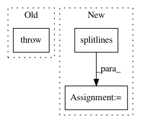

bd3a1021d7d990d5d4a8a71cc0621485af2d09e4,perfkitbenchmarker/linux_virtual_machine.py,LsCpuResults,__init__,#LsCpuResults#Any#,1631
Before Change
if match:
self.cores_per_socket = int(match.group(1))
else:
raise ValueError("Core(s) per socket could not be found in lscpu "
"value:\n%s" % lscpu)
match = re.search(r"Socket\(s\):\s*(\d+)$", lscpu, re.MULTILINE)
if match:
self.socket_count = int(match.group(1))
After Change
NUMA node0 CPU(s): 0-11
self.data = {}
for line in lscpu.splitlines():
m = self._KEY_VALUE_RE.match(line)
if m:
self.data[m.group("key")] = m.group("value")
else:
logging.debug("Ignoring bad lscpu line "%s"", line)
def GetInt(key):
if key in self.data and self.data[key].isdigit():
return int(self.data[key])
raise ValueError("Could not find integer "{}" in {}".format(
In pattern: SUPERPATTERN
Frequency: 4
Non-data size: 3
Instances
Project Name: GoogleCloudPlatform/PerfKitBenchmarker
Commit Name: bd3a1021d7d990d5d4a8a71cc0621485af2d09e4
Time: 2019-09-03
Author: chriswilkes@google.com
File Name: perfkitbenchmarker/linux_virtual_machine.py
Class Name: LsCpuResults
Method Name: __init__
Project Name: pyinstaller/pyinstaller
Commit Name: 73c62b48776f258b8ecd477fac16b40c92f5c78f
Time: 2013-02-24
Author: mzibr.public@gmail.com
File Name: setup.py
Class Name:
Method Name:
Project Name: automl/auto-sklearn
Commit Name: f4562946ab192a072ef6cb9afc1206d87b4e8284
Time: 2016-07-28
Author: feurerm@informatik.uni-freiburg.de
File Name: autosklearn/pipeline/base.py
Class Name: BasePipeline
Method Name: __init__
Project Name: MolSSI/QCEngine
Commit Name: c4c62503da100cbf491a761998c04d5e0db42413
Time: 2019-12-29
Author: ward.logan.t@gmail.com
File Name: qcengine/programs/nwchem/harvester.py
Class Name:
Method Name: harvest_hessian